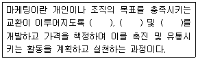
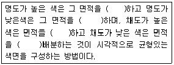

컬러리스트기사 (2015-05-31 기출문제)
1과목: 색채심리 마케팅
1. AIDMA 단계에서 광고효과가 가장 크게 나타나는 단계는?
- 행위
- 기억
- 욕구
- 흥미
(정답률: 56%)

2. 소비자 행동에 영향을 미치는 사회적 요인 중 하나로 개인의 태도나 의견, 가치관에 영향을 미치는 집단을 무엇이라고 하는가?
- 거주 집단
- 준거 집단
- 동료 집단
- 희구 집단
(정답률: 84%)
3. 유행색의 심리적 발생요인이 아닌 것은?
- 안전 욕구
- 변화 욕구
- 동조화 욕구
- 개별화 욕구
(정답률: 67%)
4. 색에 대한 좋거나 싫어하는 감정을 색채기호라 한다. 색채기호에 대한 설명 중 틀린 것은?
- 연령별 색채 기호의 차이는 명도나 채도보다는 색상차이에서 더 뚜렷하다.
- 색채기호의 평가 기준으로는 색채감정, 지각적 합리성, 색채와 사물과의 관련성 등으로 평가할 수 있다.
- 색채기호의 개인 차이는 연령, 성별, 생활환경, 경험, 학습, 성격 등 다양한 이유에서 비롯된다.
- 저 연령층에서는 색채선호가 특정색 또는 선명한 색에 집중되지만 연령이 증가하면서, 기호의 개인차가 커진다.
(정답률: 50%)
5. 소비자의 일반적 구매행동에서 영향을 미치는 요인이 아닌 것은?
- 문화적 특성
- 사회적 특성
- 심리적 특성
- 지식적 특성
(정답률: 96%)
6. SWOT 분석에 대한 설명이 틀린 것은?
- 4요소인 강점, 약점, 기회, 위협을 SWOT이라고 한다.
- 기업 내부환경을 분석하여 기회와 위협요인을 찾아낸다.
- ST전략은 강점을 살려 위협을 회피하는 경영전략이다.
- 학자에 따라서 외부환경을 강조한다는 점에서 위협, 기회, 약점, 강점을 TOWS라 부르기도 한다.
(정답률: 56%)
7. 전통적 마케팅의 개념에서 중요하게 다루어지지 않았던 것은?
- 대랑판매
- 이윤추구
- 고객만족
- 판매촉진
(정답률: 88%)
8. 색채와 문화에 대한 설명으로 틀린 것은?
- 1940년대 초반에는 군복의 영향으로 검정, 카키, 올리브 등이 사용되었다.
- 1950년대에는 전후의 심리적, 경제적 안정을 반영한 부드러운 파스텔 색조가 나타났다.
- 특정 문화권의 특색을 이루는 연상과 상징화는 체험을 통해 이루어진다.
- 역사적 유물과 유적에서 사용된 색채를 중심으로는 제작연대를 측정하기 어렵다.
(정답률: 68%)
9. 지역색에 대한 설명으로 틀린 것은?
- 일본의 지역색은 국기에 사용된 강렬한 빨강으로 상징된다.
- 랑크로(Jean-Philippe Lenclos)는 지역색을 기반으로 건축물의 색채계획을 하였다.
- 건축물에 사용되는 색채는 지리적, 기호적 환경과 관련되어야 한다.
- 지역색을 통해 국가의 아이덴티티를 구축한다.
(정답률: 81%)
10. 제품의 색채 계획이 필요한 이유와 가장 거리가 먼 것은?
- 제품 차별화
- 제품 정보 요소 제공
- 색채 연상 효과 활용
- 기억색의 이용
(정답률: 48%)
11. 소비자가 구매 후 자신의 선택에 대하여 불안감을 느끼는 것은?
- 상표 충성도
- 인지 부조화
- 내적 탐색
- 외적 탐색
(정답률: 75%)
12. 이미지조사법에서 사용되는 방법으로 반대되는 형용사간에 척도를 만들어 피험자에게 의미 내용을 분석하는 방법을 무엇이라고 하는가?
- 표본 추출법
- 서스톤(Thurston)의 일대일 비교법
- 순위법
- 오스굿(C.E.Osgoods)의 SD법
(정답률: 86%)
13. 사고와 재해를 감소시키기 위한 공장의 색채로 가장 적합하지 않은 것은?
- 핸들은 주황색을 사용하여 주의를 환기시킨다.
- 기계색은 검정색을 사용하여 무게감을 준다.
- 정밀기계공장은 차분한 환경색을 사용한다.
- 고온에서 작업하는 공장은 한색을 환경색으로 사용한다.
(정답률: 69%)
14. 자연계의 색채에 대한 설명이 틀린 것은?
- 식물의 잎이 초록색인 것은 크산토필의 영향이고 가을에 노랗게 물드는 것은 클로로필의 영향이다.
- 꽃의 대표적 색소에는 카로티노이드, 안토시아닌, 플라보노이드 등이 있다.
- 동물의 체색은 체표면 또는 체내에 분포하는 멜라닌, 카로틴 등의 색소에 의해 변화한다.
- 나방의 유충이 대부분 초록색인 것은 카무플라주 컬러의 예라 할 수 있다.
(정답률: 32%)
15. 다음의 제시된 색 - 연상과 상징을 짝지은 것 중에서 다른 세 가지 것과 그 연상과 상징이 다른 하나는?
- 빨강 - 사과
- 노랑 - 병아리
- 파랑 - 바다
- 보라 - 신비로움
(정답률: 84%)
16. 색채 정보 수집을 위해 가장 쉽게 적용되는 연구 방법은?
- 패널조사법
- 현장관찰법
- 표본조사법
- 실험법
(정답률: 75%)
17. 소비자 의사결정단계가 옳은 것은?
- 문제인식 - 대안평가 - 정보탐색 - 의사결정 - 구매 후 평가
- 문제인식 - 정보탐색 - 대안평가 - 의사결정 - 구매 후 평가
- 정보탐색 - 문제인식 - 대안평가 - 의사결정 - 구매 후 평가
- 정보탐색 - 문제인식 - 의사결정 - 대안평가 - 구매 후 평가
(정답률: 87%)
18. 다음의 ( )에 들어갈 용어로 적합하지 않은 하나는?

- 제품
- 이익
- 서비스
- 아이디어
(정답률: 67%)
19. 색채의 공감각에 대한 설명 중 틀린 것은?
- 색채와 다른 감각간의 교류작용으로 생기는 현상이다.
- 몬드리안은 시각과 청각의 조화를 통해 작품을 만들었다.
- 짠맛은 회색, 흰색이 연상된다.
- 요하네스 이텐은 색을 7음계에 연계하여 색채 소리의 조화론을 설명하였다.
(정답률: 57%)
20. 색채 정보수집 설문지 조사를 위한 조사자 사전교육에 관한 내용과 가장 거리가 먼 것은?
- 조사의 취지와 표본 선정 방법에 대한 이해
- 조사 자료의 분석방법
- 면접과정의 지침
- 참가자의 응답에 영향을 주지 않도록 중립적이고 객관적인 태도 유지
(정답률: 69%)
2과목: 색채디자인
21. 아이섀도(eye shadow)에 대한 설명이 옳게 짝지어진 것은?
- 하이라이트 컬러 : 돌출되어 보이도록 어두운 색상의 컬러를 사용한다.
- 베이스 컬러 : 아이섀도의 강조색상을 나타내는 부분이다.
- 섀도 컬러 : 눈의 음영을 표현하기 위해 바르는 곳으로, 아이홀에 해당된다.
- 언더컬러 : 눈매를 또렷하게 강조하기 위해 바르는 컬러다.
(정답률: 75%)
22. 디자인 원리 중 비례의 개념과 거리가 먼 것은?
- 객관적 질서와 과학적 근거를 명확하게 드러내는 구성형식이다.
- 기능과는 무관하나 미와 관련이 있어, 자연 가운데 훌륭한 미를 가지고 있는 것의 형태는 좋은 비례 양식을 가지고 있다.
- 회화, 조각, 공예, 디자인, 건축 등에서 구성하는 모든 단위의 크기와 각 단위의 상호관계를 결정한다.
- 구체적인 구성형식이며, 보는 사람의 감정에 직접적으로 호소하는 힘을 가지고 있다.
(정답률: 57%)
23. 디자인 사조 또는 운동을 발생한 시점을 기준으로 볼 때, 시대적인 순서로 바르게 나열한 것은?
- 아르누보 - 데스틸 - 바우하우스 - 포스트모더니즘
- 아르데코 - 큐비즘 - 데스틸 - 포스트모더니즘
- 아르누보 - 바우하우스 - 포스트모더니즘 - 아르데코
- 아르데코 - 데스틸 - 포스트모더니즘 - 큐비즘
(정답률: 59%)
24. 빅터 파파넥이 주장한 디자인의 필요성을 가장 잘 설명한 것은?
- 특수한 목적을 달성하기 위한 계획적이고 의도적인 실용화
- 형태는 기능에 적합해야 한다는 기능성을 가진 디자인의 중요성
- 재료, 도구, 공정과의 상호작용과 그 방법에 대한 중요성
- 경제적, 심리적, 정신적, 기술적, 윤리적, 지적요구에 복합한 디자인
(정답률: 24%)
25. 의상디자인 발달과정에서 시대별로 나타나는 색채 사용의 특성 중 타당하지 않은 것은?
- 1900년대에는 아르누보의 부드럽고 여성적인 경향을 보이는 파스텔 색조가 유행하였다.
- 1940년대 초반에는 2차 세계대전의 영향으로 검정, 카키, 올리브의 군복의 색조가 즐겨 사용되었다.
- 1960년대에는 팝아트 영향으로 블루진과 자연의 색조인 파랑, 녹색이 유행하였다.
- 1980년대에는 재패니스 룩 (Japanese Look), 앤드로지너스 룩 (Androgynous look)으로 검정, 흰색과 어두운 자연계 색이 유행하였다.
(정답률: 66%)
26. 안티에이징을 위해 개발된 화장품 홍보시 가장 효율적인 매체는?
- 신문
- 라디오
- 옥외광고
- 잡지
(정답률: 88%)
27. 단시간 내에 급속도로 생겼다가 사라지는 유행을 의미하는 것은?
- 트렌드(trend)
- 포드(ford)
- 클래식(classic)
- 패드(fad)
(정답률: 91%)
28. DM의 종류에 대한 설명으로 틀린 것은?
- 팜플렛, 카탈로그, 브로슈어, 서신 등 소구대상이 명확하다.
- 집중적인 설득을 할 수 있는 광고로 소비자에게 우편이나 이메일로 전달된다.
- 예상고객을 수집, 관리하기 어려워 주목성이 떨어질 수 있다.
- 지역과 소구대상이 한정되어 있어 광범위한 광고가 어렵다.
(정답률: 53%)
29. 디자인의 조건 중 실용성 및 효용성에 속하는 것은?
- 합목적성
- 안전성
- 경제성
- 질서성
(정답률: 79%)
30. 윌리엄 모리스가 미술공예운동에서 주로 추구한 수공예 양식은?
- 바로크
- 로마네스크
- 고딕
- 로코코
(정답률: 60%)
31. 디자인의 조형요소에 대한 설명이 틀린 것은?
- 디자인의 조형요소를 크게 나누면 형, 색, 재질감, 빛으로 분류할 수 있다.
- 형은 단순히 눈에 비쳐지는 윤곽이지만, 형태는 일정한 크기, 색채, 질감을 가진 모양이다.
- 수학적 의미의 점과 선은 크기와 너비가 존재하지 않지만 조형적으로 점은 크기 선은 너비가 있다.
- 직접 지각하여 얻는 이념적인 형은 자연적 형태와 인공적 형태로 구분된다.
(정답률: 18%)
32. 디자인에 있어 색채 계획 (color planning)의 순서로 가장 적합한 것은?
- 디자인적용 - 색채 환경 분석 - 색채 심리 분석 - 색채 전달 계획
- 색채 환경 분석 - 색채 심리 분석 - 색채 전달 계획 - 디자인 적용
- 색채 심리 분석 - 색채 전달 계획 - 디자인 적용 - 색채 환경 분석
- 색채 전달 계획 - 디자인 적용 - 색채 환경 분석 - 색채 심리 분석
(정답률: 82%)
33. 미용디자인에서 메이크업의 표현 요소에 대한 설명이 틀린 것은?
- 형은 선과 면에 의해 표현되며, 그 중 입술라인과 아이라인 등은 선에 의한 표현이다.
- 색은 메이크업, 의상, 헤어스타일과의 조화를 통하여 개성을 부각 시키고 상황에 따른 메시지를 전달하는 역할을 한다.
- 피부를 돋보이게 하고 얼굴의 형태를 수정 보완해 주고, 입체를 부여하는 것은 질감이다.
- 질감은 포인트 메이크업과 조화를 이루며 효과를 상승시키고 전체의 이미지에 영향을 미치게 된다.
(정답률: 46%)
34. 생태학적 디자인 원리와 거리가 먼 것은?
- 환경친화적 디자인
- 리사이클링 디자인
- 에너지 절약형 디자인
- 생물학적 단일성을 강조하는 디자인
(정답률: 88%)
35. 다음 중 시각디자인에 관한 내용으로 틀린 것은?
- 시각 디자인의 역할은 의미전달보다는 감성적 만족을 주는 것이 가장 중요하다.
- 시각 커뮤니케이션에 있어 색채는 매우 중요한 역할을 하는 디자인 요소이다.
- 시각 디자인은 일차적으로 시각적 흥미를 불러일으킬 필요가 있다.
- 시각 디자인의 매체는 인쇄매체에서 점차 영상매체로 확대되고 있다.
(정답률: 90%)
36. 라틴어의 디자인(Design) 어원으로 지시, 계획하다의 의미를 가진 용어는?
- 데생(Dessin)
- 디세뇨(Disegno)
- 플래이닝(Plannning)
- 데시나레(Designare)
(정답률: 77%)
37. 판매시설에서 판매장의 색채 계획과 배색으로 바람직하지 않은 것은?
- 고객의 시선을 모으고 진열된 상품의 색이 효과적으로 돋보이게 한다.
- 직접조명으로 빛의 대비를 크게 하고 실내 주조색은 강한 명도대비의 색상을 쓴다.
- 상품의 내용과 품질을 잘 구별할 수 있게 조명을 충분히 하고 적절한 색채를 적용한다.
- 판매장 주요 고객의 연령과 성별을 고려하여 이들의 기호에 맞는 색상을 배치한다.
(정답률: 88%)
38. 프로그램과 프로그램 중간에 삽입되는 형식으로 방송하는 광고는?
- 스폿(spot)r광고
- 블록(block)광고
- 스폰서십(sponsorship)광고
- 네트워크(network)광고
(정답률: 60%)
39. 카피(copy)의 종류 중 사진 또는 일러스트레이션의 짧은 설명문은?
- 헤드라인(headline)
- 바디카피(body copy)
- 슬로건(slogan)
- 캡션(caption)
(정답률: 60%)
40. 건축가 르 꼬르뷔제가 인체공학적 특성을 반영하여 만든 건축공간의 기준 척도로 사용된 것은?
- 황금비례
- 모듈
- 인체비례
- 금강비례
(정답률: 59%)
3과목: 색채관리
41. 육안 조색에 관련된 설명으로 틀린 것은?
- D65광원
- 조도1000lx
- L*a*b 값 사용
- N9의 벽면
(정답률: 63%)
42. 색채를 효과적으로 재현하기 위해 다른 과정보다 우선 되어야 하는 것은?
- 재현하려는 표준 표본의 색채 소재(도료, 염료 등) 특성 파악
- 재현하려는 표준 표본의 측색을 바탕으로 한 색채 정량화
- 색채 재현을 위한 원색의 조합비율 구성
- 색채 재현을 위해 사용하는 컬러런트의 성분 파악
(정답률: 42%)
43. RGB 이미지를 프린트하기 위해 RGB 잉크젯 프린터의 ICC 프로파일을 사용할 때 다음 중 맞는 설명은?
- RGB 이미지는 프린트를 위하여 반드시 먼저 CMYK로 변환되어야 한다.
- RGB이미지를 프린터 프로파일로 변환하면 중간에 CIE LAB 색공간을 거치게 된다.
- 정확한 변환을 위해서 포토샵 등의 이미지 편집 프로그램에서와 프린터 드라이버에서 별도로 한 번씩 변환하여야 한다.
- 포토샵에서 색 변환을 위해 사용하는 메뉴는 '프로파일 할당 (assign profile)' 이다.
(정답률: 40%)
44. 관찰 각도에 대한 설명으로 올바른 것은?
- 시야각 2도는 눈에서 50cm 거리에서 약 9cm의 물체를 보는 것을 기준으로 한다.
- CIE가 1964년에 정한 등색 함수는 시야 각 10도를 기준으로 한다.
- CIE가 1931년에 정한 등색 함수는 시야각 10도를 기준으로 한다.
- 시야각 10도는 눈에서 50cm 거리에서 약 2cm의 물체를 보는 것을 기준으로 한다.
(정답률: 40%)
45. 색영역(color gamut)에 대한 설명으로 옳은 것은?
- 발색영역의 외곽을 구축하는 색료는 명도가 높은 원색이 된다.
- 감법혼색의 경우 채도가 높은 마젠타, 그린, 블루를 사용함으로써 가장 넓은 색채영역을 구축한다.
- 감범혼색에서 주색은 특정한 파장을 효율적으로 깎아내는 특성을 가진 색료가 된다.
- 가법혼색의 경우 주색의 파장 영역이 좁으면 좁을수록 색역도 같이 줄어든다.
(정답률: 38%)
46. 염료(Dye)에 대한 설명으로 바른 것은?
- 인디고는 가장 최근의 염료 중 하나로 인디고를 인공합성하게 되면서 청바지의 색을 내는 데에 이용하게 되었다.
- 염료를 이용하여 염색하는 구체적인 방법은 피염제의 종류, 흡착력 등에 의해 정해지는 것은 아니다.
- 직물섬유의 염색법과 종이, 피혁, 털, 금속, 표면에 대한 염색법은 동일하다.
- 효율적인 염색을 위해서는 염료가 잘 용해되어야 하고, 분말의 염료에 먼지가 없어야 한다.
(정답률: 79%)
47. 광원의 색에 대한 설명으로 맞는 것은?
- 색온도란 광원색의 채도와 관련되는 값이다.
- 색온도는 kelvin 단위로 나타낸다.
- 주파상선은 광원색의 채도와 상관되는 값이다.
- 녹색계열의 단색광 광원들은 색온도를 구할 수 있다.
(정답률: 80%)
48. 다음 중 분광식 색채계의 장점은?
- 측정이 간편하고 구조가 상대적으로 간단하다.
- 시료의 분광반사율을 측정하므로 다양한 광원과 시야에서의 색채값을 동시에 산출해 낼 수 있다.
- 현장에서의 색채관리, 이동형 색채계로 많이 활용되고 있으며 비색계(colorimeter)라고도 불린다.
- 백색기준물의 색좌표를 기준으로 측색하므로 오염이 적다.
(정답률: 71%)
49. 분광광도계(spectrophotometer)로 얻을 수 있는 데이터가 아닌 것은?
- 광택
- XYZ
- L*a*b
- 분광 반사율 그래프
(정답률: 79%)
50. 육안검색 후 기록한 조건에서 빠진 중요 항목은?
- 작업면의 조도
- 광원의 종류
- 광원의 성능
- 조명 관찰 조건
(정답률: 21%)
51. 다음 중 컬러런트의 설명에 대해 틀린 것은?
- 식물계 색소는 주로 염료를 사용한다.
- 용제의 종류를 변경하여 사용할 수 없다.
- 하나의 컬러런트는 유성 또는 수성에 공통으로 사용되기도 한다.
- 청색은 주로 어류나 파충류의 비늘 색소를 통해 얻는다.
(정답률: 47%)
52. 접촉식 물체색 측색장비를 이용한 측색시 유의사항으로 옳은 것은?
- 대상이 지닌 물체의 색을 객관적으로 측정할 수 있도록 일정한 거리를 두고 측색해야 한다.
- 측색 전에는 백색, 검은색, 교정판을 모두 사용하여 측색기를 교정하여야 한다.
- 대상 소재가 굴곡이 심하여 적분구 입구과 거리차가 발생하는 것은 유의할 필요가 없다.
- 데스크탑 형태의 측색기는 반드시 표준 광원하에서 사용하여야 한다.
(정답률: 27%)
53. 열가소성 플라스틱에 대한 설명으로 틀린 것은?
- 열을 가하면 연화되어 유동성을 갖는다.
- 열을 가하면 화학적 변화가 일어나지 않고 냉각하면 원래 상태로 돌아간다.
- 열을 다시 가해도 형태가 변하지 않는 수지로 섬유강화플라스틱을 제조한다.
- 가소성이 크고 열변형 가공성이 용이하며 자유로운 형태로 성형이 가능하다.
(정답률: 53%)
54. 안료를 도료에 사용할 때, 표면을 덮어 보이지 않게 하는 성질을 무엇이라 하는가?
- 은폐성
- 근접성
- 침투성
- 착색성
(정답률: 75%)
55. 디지털 입.출력시스템에 대한 설명이 틀린 것은?
- 모션캡쳐 : 몸에 센서를 부착하고 그 동작을 데이터화 하여 가상 캐릭터가 같은 동작으로 애니메이션 되도록 하는 장치이다.
- 3D 스캐너 : 회전하는 플랫폼 위에 대상을 올려놓고 레이저 광선으로 대상의 표면을 스캔하는 방식이다.
- 디지털 프린터 : 고해상도로 출력하기 때문에 출력물 표면에 픽셀이 거의 보이지 않는 고화질의 출력물을 만들 수 있다.
- OLED 디스플레이 : 백라이트와 필터를 이용하는 방식이다.
(정답률: 73%)
56. 복원중(정확한 문제, 보기내용을 아시는분께서는 오류 신고를 통하여 문제, 보기 내용 작성 부탁드립니다. 문제 오류로 정답은 1번입니다.)
- 복원중
- 복원중
- 복원중
- 복원중
(정답률: 66%)
57. 맥아담의 편차 타원을 정량화하기 위해서 프릴레, 맥아담, 칙커링에 의해 만들어진 색차는?
- CNC(2:1)
- FMC-2
- BFD(1:c)
- CIE94
(정답률: 67%)
58. 만약 이전에 스캔해두었던 이미지에 픽셀을 추가시켜 해상도를 증가시켜야 하는 작업을 해야 할 경우가 생겼다면, 활용할 수 있는 리샘플링 방법 중 가장 정확하고 시간이 많이 드는 방법은 다음 중 어떤 방법인가?
- 니어리스트 네이버 보간법 (nearest neighbor)
- 바이리니어 보간법 (bilinear)
- 바이큐빅 보간법 (bicubic)
- 슈퍼샘플링 (super sampling)
(정답률: 42%)
59. 조색을 위한 수학식을 이용한 컬러모델(수학 모델) 중 잘못 설명된 것은?
- 수학식을 이용한 컬러모델을 이용하면, 계산을 통해 쉽게 초기 레시피를 예측하는 것이 가능하여 조색의 정확도를 높일 수 있다.
- 수학 모델 중 색의 혼합과정을 설명하는 물리적, 화학적 법칙을 수식화 하는 방법은 색의 혼합방법에 상관없이 동일한 수학 모델을 적용한다.
- 수학 모델 중에는 샘플을 제작하기 위해 필요한 색료 조합과 각 조합으로 만들어진 샘플의 측정된 색값과의 관계를 가장 잘 설명하는 수식을 통계 기술을 이용하여 개발하는 방법이 있다.
- 수학 모델 중에는 색료 조합과 측정된 색값들을 룩업 테이블 형식으로 저장 한 후 임의의 색료 조합에 대한 측색값 혹은 임의의 측색값에 대한 색료조합을 저장된 데이터들을 활용하여 보간법을 사용해 예측하는 방법이 있다.
(정답률: 52%)
60. 황색으로 염색되는 직접염료로 9월에 열매를 채취하여 볕에 말려 사용하고, 종이나 직물의 염색 및 식용 색소로도 사용되는 천염염료는?
- 치자염료
- 자초염료
- 오배자염료
- 홍화염료
(정답률: 72%)
4과목: 색채지각론
61. 심리보색에 대한 설명 중 옳은 것은?
- 회전혼색의 결과 유채색이 되는 보색
- 우리 눈의 잔상현상에 따른 보색
- 색상환에서 마주보는 색
- 회전혼색의 결과 무채색이 되는 보색
(정답률: 59%)
62. 색채지각과 감정효과에 관한 내용 중 틀린 것은?
- 따뜻한 느낌이 필요한 실내공간에 5YR 7/4를 사용하였다.
- 부드러운 느낌이 필요한 유야용품에 5R 9/2를 사용하였다.
- 가벼운 느낌이 필요한 상자에 N1을 사용하였다.
- 정신집중을 요구하는 사무공간에 5PB 4/2를 사용하였다.
(정답률: 56%)
63. 색의 대비에 대한 설명 중 틀린 것은?
- 색상대비 - 색상이 다른 두 색채가 석로의 영향으로 인해 두 색의 색상차가 커져 보인다.
- 명도대비 - 명도가 다른 두 색이 서로의 영향으로 인해 밝은 색채는 더욱 밝고, 어두운 색채는 더욱 어두워 보인다.
- 채도대비 - 채도가 다른 두 색이 서로의 영향으로 인해 채도가 높은 색채는 더욱 선명해 보이고, 채도가 낮은 색채는 더욱 흐리게 보인다.
- 보색대비 - 두 색의 보색은 서로의 영향으로 인해 두 색의 채도가 낮아 보인다.
(정답률: 78%)
64. 회전원판에 같은 면적 비율로 5Y8/14, 5R4/14의 두 색을 회전시켰을 때 지각되는 색채에 가장 가까운 것은?
- 5YR 6/7
- 5YR 6/14
- 10YR 6/7
- 10YR 6/14
(정답률: 79%)
65. 색채혼합에 대한 설명 중 틀린 것은?
- 컬러텔레비전은 병치가법혼색의 원리가 적용된다.
- 감법혼합은 색을 혼합할수록 명도와 채도가 낮아진다.
- 인쇄과정에서는 가법혼색과 감법혼색의 원리가 모두 적용된다.
- 직조시의 병치혼색 효과는 일종의 감법혼합이다.
(정답률: 55%)
66. 색의 삼속성중 시인성에 영향을 주는 순서를 바르게 나열한 것은?
- 채도 - 색상 - 명도
- 색상 - 채도 - 명도
- 채도 - 명도 - 색상
- 명도 - 채도 - 색상
(정답률: 64%)
67. 유채색 지각과 관련된 광수용기는?
- 간상체
- 추상체
- 중심와
- 맹점
(정답률: 76%)
68. 색의 명시성에 대한 설명으로 틀린 것은?
- 색채간의 명도 차이나 채도 차이가 클 때 색이 잘 식별된다.
- 조명의 밝기 정도, 즉 조도에 따라 명시의 순응에 변화가 있다.
- 명도가 같을 때는 채도가 높은 쪽의 명시성이 높다.
- 명시성이 높은 색은 대체로 주목성도 높다.
(정답률: 74%)
69. 가시광선의 스펙트럼에 관한 설명으로 옳은 것은?
- 빛의 직진현상을 이용한 것이다.
- 파장에 따라 굴절률이 다르기 때문에 나타난다.
- 빛의 분광으로 나타난 색들은 간격이 동일하다.
- 스펙트럼의 색을 빨강, 주황, 노랑 등 7색으로 주장한 것은 호이겐스이다.
(정답률: 75%)
70. 헤링의 색채지각설에서 제시하는 기본색은?
- 빨강, 초록, 노랑, 청자의 4원색
- 빨강, 초록, 청자의 3원색
- 빨강, 초록, 노랑, 파랑의 4원색
- 빨강, 노랑, 파랑의 3원색
(정답률: 87%)
71. 대비효과가 순간적이며 시점을 한 곳에 집중시키려는 색채지각과정에서 일어나는 현상은?
- 동시대비
- 계시대비
- 병치대비
- 동화대비
(정답률: 50%)
72. 색채의 심리 효과에 대한 설명 중 틀린 것은?
- 어떤 색이 다른 색의 영향을 받아서 본래의 색과는 다른 색으로 보이는 현상을 색채심리효과라 한다.
- 무게감에 가장 큰 영향을 미치는 것은 명도로, 어두운 색일수록 무겁게 느껴진다.
- 겉보기에 강해 보이는 색과 약해 보이는 색은 시각적인 소구력과 관계되며, 주로 채도의 영향을 받는다.
- 흥분 및 침정의 반응효과에 있어서 명도가 가장 중요한 역할을 하는데, 고명도는 흥분감을 일으키고, 저명도는 침정감의 효과가 나타난다.
(정답률: 62%)
73. 간상체와 추상체의 시각은 각각 어떤 빛의 파장에 가장 민감한가?
- 약 300nm, 약 460nm
- 약 400nm, 약 460nm
- 약 500nm, 약 560nm
- 약 600nm, 약 560nm
(정답률: 82%)
74. 물체에 적용 시 가장 작아 보이는 색은?
- 채도가 높은 주황색
- 밝은 노란색
- 명도가 낮은 파란색
- 채도가 높은 연두색
(정답률: 78%)
75. 흥분감이 가장 강하게 유도되는 색은?
- 5YR 4/1
- 5B 5/10
- 5R 4/14
- 5Y 8/6
(정답률: 74%)
76. 정육점에서 사용된 붉은 색 조명이 고기를 신선하게 보이도록 하는 현상은 무엇 때문인가?
- 분광반사
- 연색성
- 조건등색
- 스펙트럼
(정답률: 71%)
77. 다음 중 가법혼색이 아닌 것은?
- 컬러 모니터의 색
- TV의 색
- 색 유리판을 여러 장 겹칠 때의 색
- 무대조명에 의한 색
(정답률: 75%)
78. 면적대비에 대한 일반적인 설명이다. ( )에 들어갈 단어가 순서대로 옳게 나열된 것은?

- 크게, 작게, 크게, 작게
- 작게, 크게, 작게, 크게
- 작게, 크게, 크게, 작게
- 크게, 작게, 작게, 크게
(정답률: 67%)
79. 회전혼합에 대한 설명 중 옳은 것은?
- 포스터컬러의 혼합 원리와 동일하다.
- 색자극에 의한 혼합으로 감법혼합이다.
- 실제로 혼색되는 것이 아니라 시각적인 혼합이다.
- 혼합 전, 색들의 각 면적은 혼합 후의 명도나 색상의 결과에 영향을 미치지 못한다.
(정답률: 91%)
80. 빛에 대한 설명으로 틀린 것은?
- 장파장의 빨간빛은 가장 적게 굴절되며, 단파장의 보랏빛은 가장 많이 굴절된다.
- 우리가 눈으로 보는 것은 흡수된 빛을 보는 것이다.
- 모든 파장의 빛을 고르게 반사하는 경우에 무채색으로 지각된다.
- 빛이 물체에 닿았을 때 가시광선의 파장이 분해되어 반사, 흡수, 투과의 현상이 일어난다.
(정답률: 52%)
5과목: 색채체계론
81. 역사적 인물과 색채관이 옳은 것은?
- 사양문학에서 최초로 색 질서를 시도한 사람은 소크라테스이다.
- 헤링의 반대색설 개념은 오스트발트 색체계와 NCS에 적용되었다.
- 뉴턴의 반대색은 노랑 - 보라, 오렌지 - 파랑, 빨강 - 초록 이다.
- 쉐뷰럴은 일곱 개의 기본색을 음악 스케일에 따라 질서화 시켰다.
(정답률: 66%)
82. 순색, 백색, 흑색을 꼭지점으로 하는 등색삼각형의 연속된 선상의 색조합을 색채조화 이론으로 하는 것은?
- 비렌 색채조화론 - 먼셀 색채조화론
- 먼셀 색채조화론 - 오스트발트 색채조화론
- 비렌 색채조화론 - 오스트발트 색채조화론
- 오스트발트 색채조화론 - 루드 색채조화론
(정답률: 53%)
83. 독일의 물리화학자인 오스트발트(W. Ostwald)에 의해 표준화된 오스트발트 색체계에 대한 설명으로 옳은 것은?
- 24색상환 사용하며 색상번호 1은 빨강, 24는 자주이다.
- 색체계의 표기방법은 색상, 흑색량, 백색량 순서이다.
- 아래쪽에 검정을 배치하고 맨 위쪽에 하양을 둔 원통형의 색입체이다.
- 엄격한 질서를 가지는 표색계의 구성원리가 조화로운 색채 선택을 가능하게 한다.
(정답률: 38%)
84. 문 . 스펜서가 미국 광학회 학회지에 발표한 색채조화론과 관련이 없는 것은?
- 고전적 색채조화론의 기하학적 형식
- 색채조화에 있어서의 면적
- 색채조화에 있어서의 미도측정
- 색채조화에 따르는 휘도
(정답률: 35%)
85. 전통 방위색과 관련된 상징으로 옳은 것은?
- 황색 - 중앙 : 가을, 황룡(黃龍), 인(仁)
- 청색 - 동쪽 : 겨울, 백호(白虎), 의(義)
- 적색 - 남쪽 : 여름, 주작(朱雀), 예(禮)
- 백색 - 서쪽 : 봄, 현무(玄武), 지(智)
(정답률: 80%)
86. 한국산업표준의 계통색명인 흐린 노랑에 적합한 먼셀기호는?
- 2.5Y 8.5/4
- 5Y 3/9
- 5Y 8/10
- 10Y 6/10
(정답률: 61%)
87. 먼셀기호 5G 5/8에 해당하는 관용색명의 이름은?
- 피콕그린(peacock green)
- 에메랄드그린(emerald green)
- 파스텔블루(pastel blue)
- 올리브그린(olive green)
(정답률: 53%)
88. 우리나라 고구려 고분에는 사신도가 그려져 있다. 사신도의 현무와 같은 방위를 의미하는 요소는?
- 물(水)
- 불(火)
- 나무(木)
- 흙(土)
(정답률: 48%)
89. CIE 색도도에서 나타내고 있는 사항이 아닌 것은?
- 실존하는 모든 색을 나타낸다.
- 백색광은 색도도의 중앙에 위치한다.
- 색도도 안에 있는 한 점은 순색을 나타낸다.
- 색도도 내의 임의의 세 점을 잇는 3각형 속에는 3점에 있는 색을 혼합하여 생기는 모든 색이 들어있다.
(정답률: 58%)
90. 먼셀 색체계에 관한 설명으로 틀린 것은?
- 현재 우리나라 산업표준으로 제정되어 사용하고 있다.
- 5R 4/10의 표기에서 명도가 4, 채도가 10 이다.
- 기본 색상은 Red, Yellow, Green, Blue, Puple이다.
- 색입체를 수평으로 절단한 면은 등색상면의 배열이다.
(정답률: 74%)
91. CIELAB의 색값으로 옳은 것은?
- +a*, +b* 값의 색은 Green, Blue 이다.
- +a*, -b* 값의 색은 Red, Blue 이다.
- -a*, +b* 값의 색은 Red, Yellow 이다.
- -a*, -b* 값의 색은 Green, Yellow 이다.
(정답률: 79%)
92. DIN 색체계에 대한 설명으로 틀린 것은?
- 24가지 색상으로 구성되어 있다.
- 채도는 0 ~ 15까지로 0은 무채색이다.
- 16:6:4와 같이 표기하고, 순서대로 Hue, Darkness, Saturation을 의미한다.
- 등색상면 흑색점을 정점으로 하는 부채형으로서 한 변은 백색에 가까운 무채색으로 다른 끝은 순색이 된다.
(정답률: 39%)
93. CIEXYZ 체계의 색 값으로 가장 밝은 색은?
- X = 29.08, Y = 19.77, Z = 12.41
- X = 76.45, Y = 78.66, Z = 80.87
- X = 55.51, Y = 59.10, Z = 76.28
- X = 4.70, Y = 6.55, Z = 6.09
(정답률: 71%)
94. 색채조화에 대한 설명으로 틀린 것은?
- 색채조화는 상대적인 색을 바르게 선택하여, 더욱 좋은 효과를 얻는 것을 의미한다.
- 색채조화는 주관적인 판단이나 일시적인 평가를 얻기 위한 것이다.
- 색채조화는 조화로운 균형을 의미한다.
- 색채조화는 두 색 또는 그 이상의 색채연관효과에 대한 가치평가로 말한다.
(정답률: 82%)
95. 문·스펜서의 정량적 방법에 의한 색채조화론에 대한 설명이 틀린 것은?
- 회전혼색법을 사용하여 두 개 이상의 색을 배열하였을 때, 결과가 N5인 것의 가장 조화롭다.
- N5를 중심으로 낮은 채도의 색은 넓게, 높은 채도의 색은 좁게 배색하는 것이 조화롭다.
- 무채색은 명도가 등간격으로 배열하였을 때 조화롭다.
- 제 2 불명료는 아주 유사한 색의 부조화를 의미한다.
(정답률: 39%)
96. 먼셀 색체계의 색상 중 가장 채도가 높은 색 영역을 갖는 색상은?
- 5BG
- 5YR
- 5PB
- 5P
(정답률: 86%)
97. P.C.C.S. 표색계의 톤에 대한 설명 중 틀린 것은?
- 톤은 명도와 채도의 복합개념을 말한다.
- 연한 녹색은 It12 로 표기한다.
- 무채색은 모두 7톤으로 분류한다.
- Gy-6.5는 6.5 명도의 무채색이다.
(정답률: 56%)
98. 현색계의 설명으로 옳은 것은?
- 심리, 물리적인 빛의 혼색실험에 기초를 둔 색체계이다.
- CIE 표준 색체계 (XYZ 색체계)가 가장 대표적이다.
- 물체의 색채를 표시하는 체계로 표준색표의 번호나 기호를 붙인다.
- 빛의 3원색인 적, 녹, 청의 조합에 의한 가법혼색의 원리가 적용된다.
(정답률: 67%)
99. 한국산업표준에 의한 물체색의 색이름 중 기본색명으로만 나열된 것은?
- 빨강, 파랑, 밤색, 남색, 갈색, 분홍
- 노랑, 연두, 갈색, 초록, 검정, 하양
- 회색, 청록, 녹색, 감색, 빨강, 노랑
- 빨강, 파랑, 노랑, 주황, 녹색, 연지
(정답률: 75%)
100. 색을 언어로 표시하는 방법인 색명법 중에서 일반색명에 대한 설명은?
- 관용색명이라고도 하며 관습적으로 사용해온 하양, 검정, 빨강 등의 고유색명이 여기에 속한다.
- 일반적인 자연현상에서 유래한 하늘색, 물색, 황토색 등이 여기에 속한다.
- 색의 체계에 따라 정확한 전달을 목표로 함으로써 색의 감정적인 느낌의 전달이 어렵다.
- 색채를 색상, 명도, 채도에 따라 수식어를 정하여 자주빛 분홍 등으로 표시하는 색명이다.
(정답률: 62%)